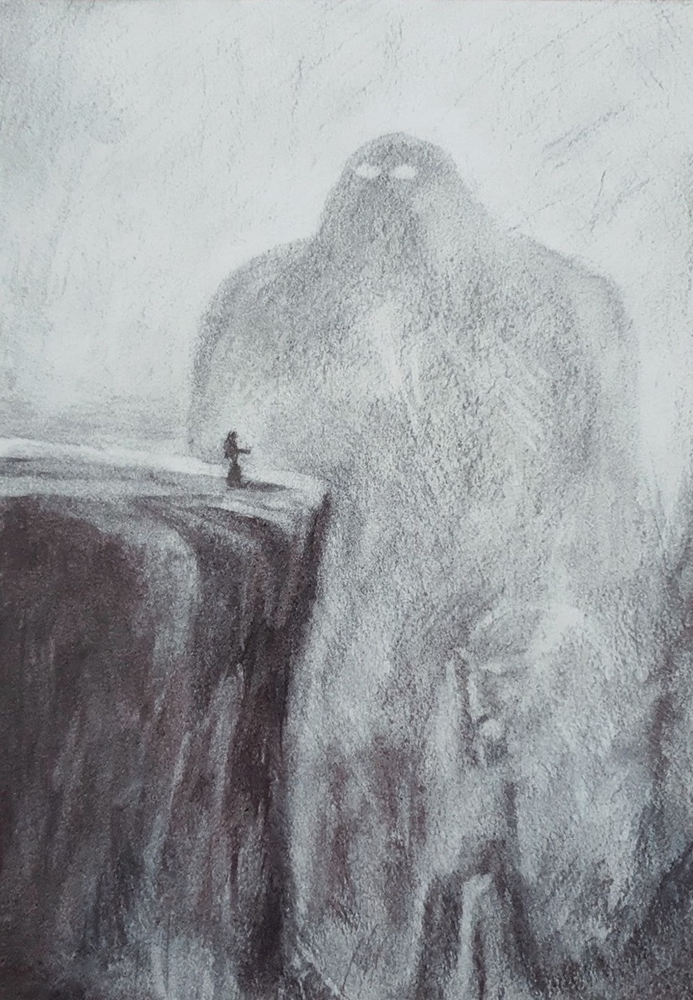
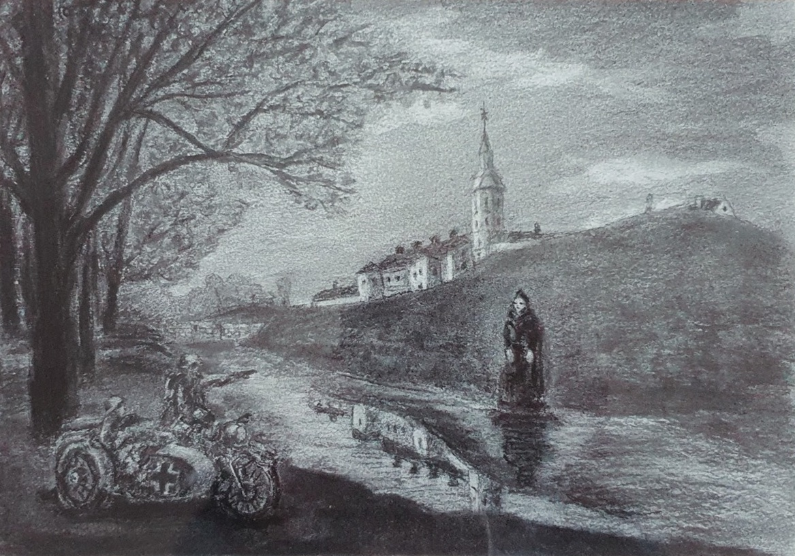
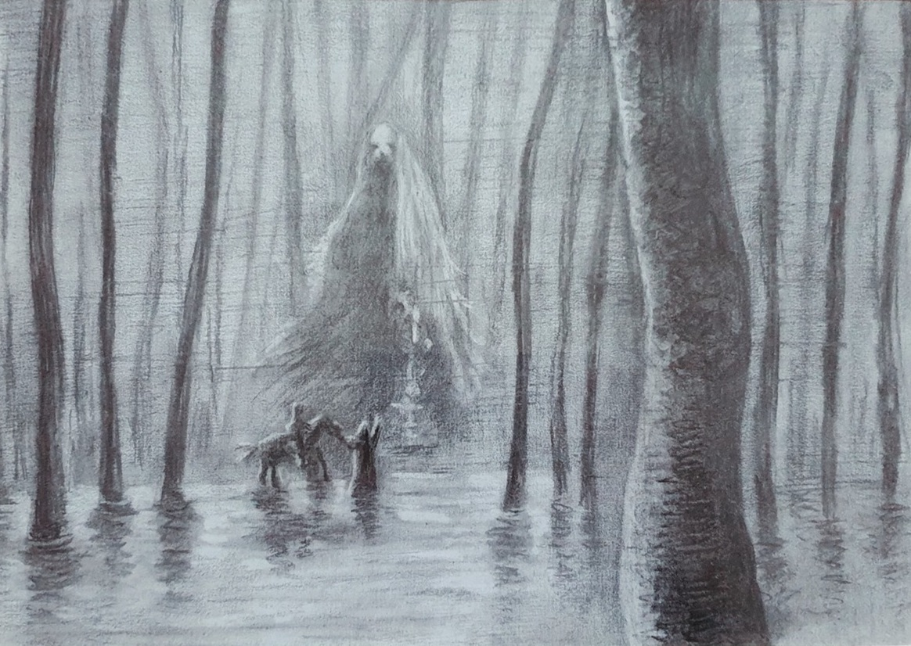
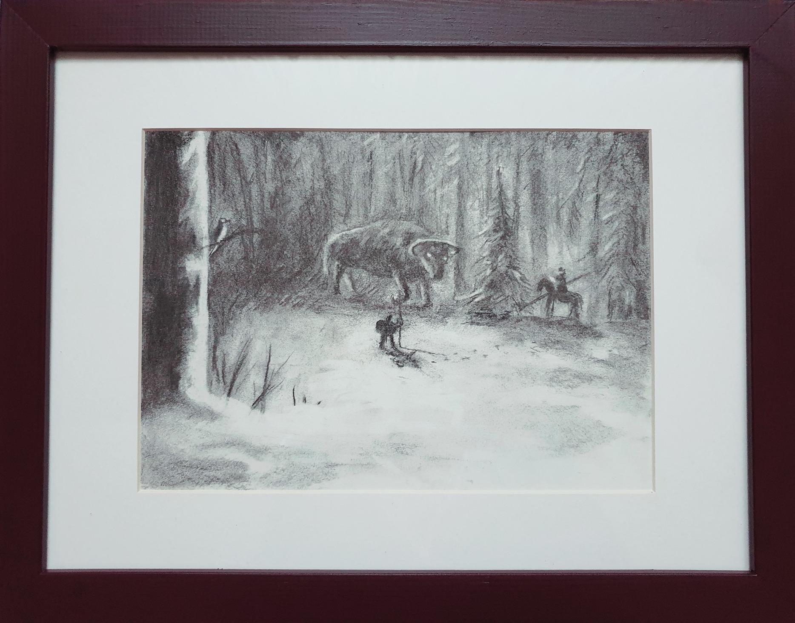
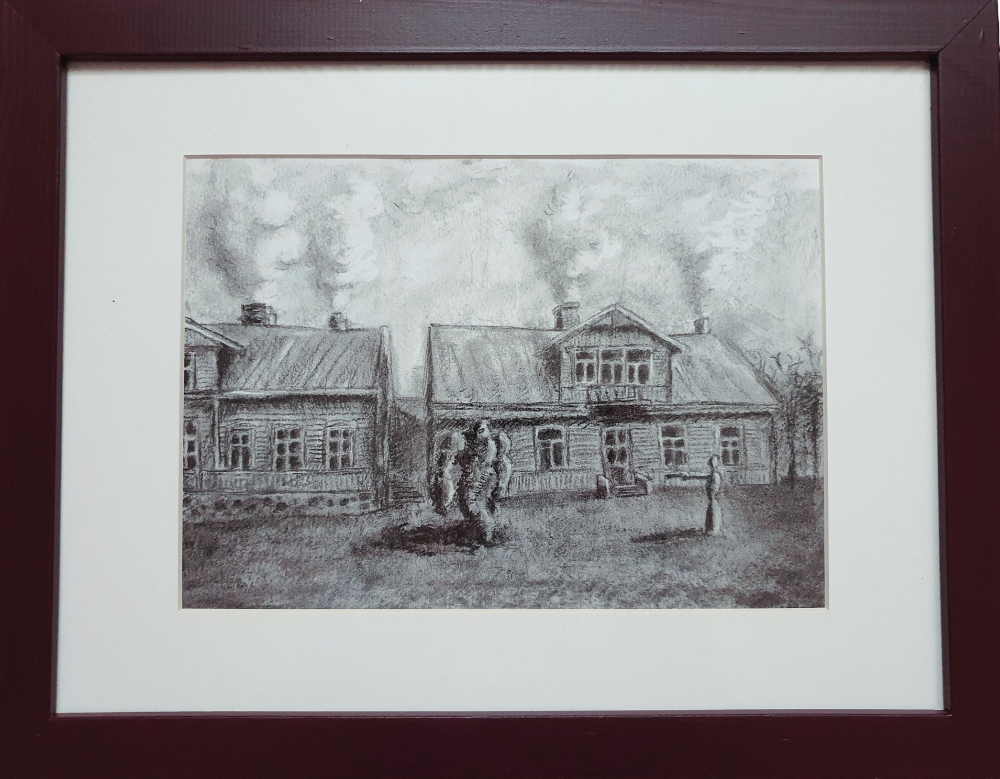
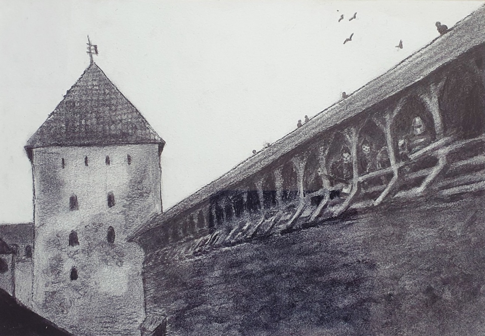
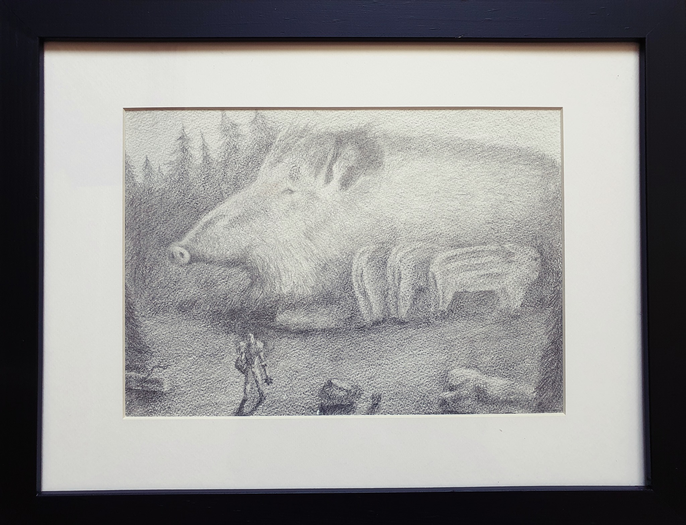
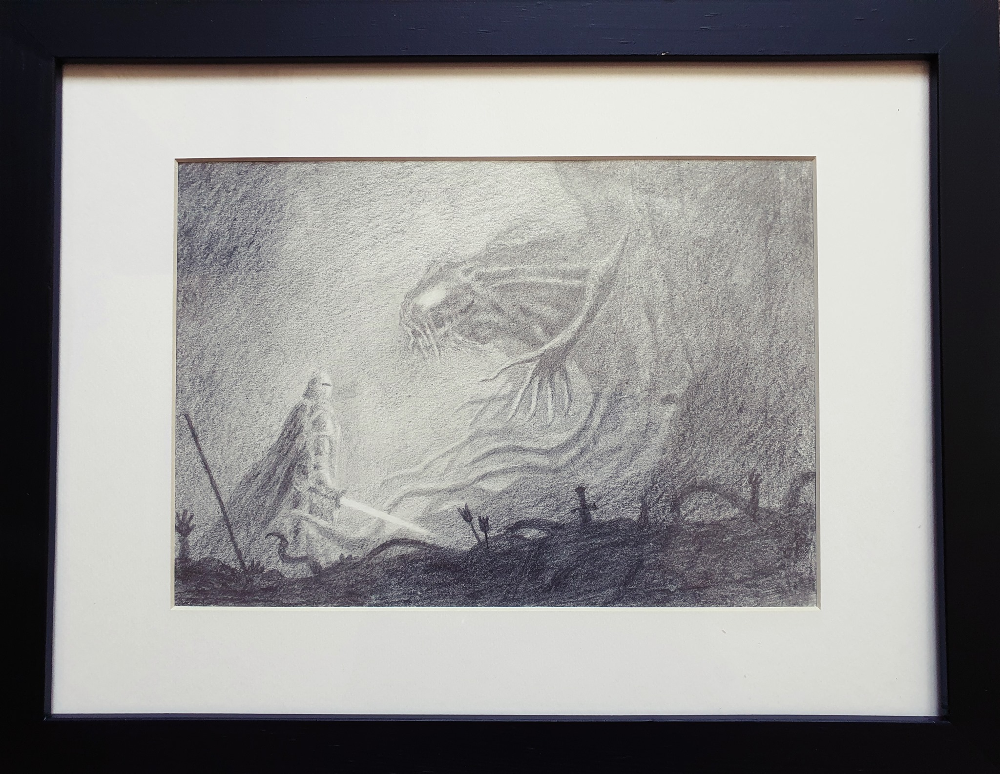
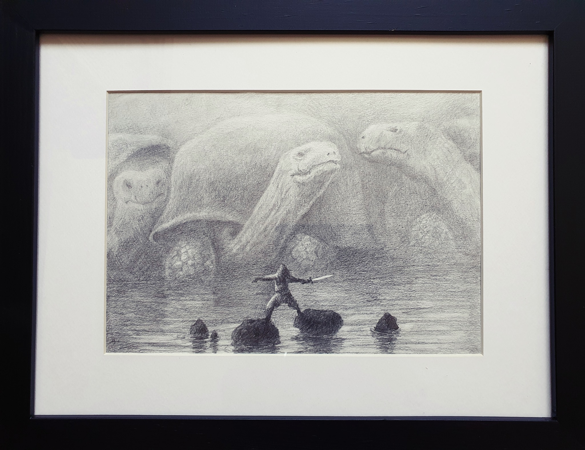
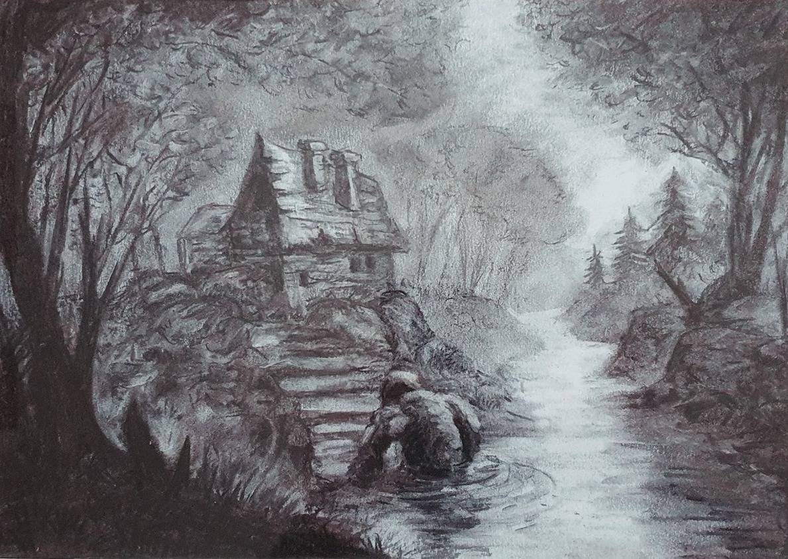

Ахвяра Стрыбогу / Sacrifice to Stribog, charcoal, 2020

Чорная панна Нясвіжа / The Black Maiden of Nesvizh, charcoal, 2020

Наўка. Паўдневыя балоты / Nav. Southern bogs, charcoal, 2020

Тур. Нечаканая сустрэча / Taurus. An unexpected meeting, charcoal, 2020

Гарадзенскі голем / Hrodna golem, charcoal, 2020

Прывіды Лідскага замка прыйшлі за князем Карыбутам / The ghosts of the Lida castle came for Prince Koribut, charcoal, 2020

Святло дзікоў / Wild boar light, pencil, 2016

Крыжак і жывое дрэва / The crusader and the living tree, pencil, 2016

Званец. Тры чарапахі / Zvanec. Three turtles, pencil, 2016

Лясны троль ідзе дадому / The forest troll goes home, charcoal, 2016